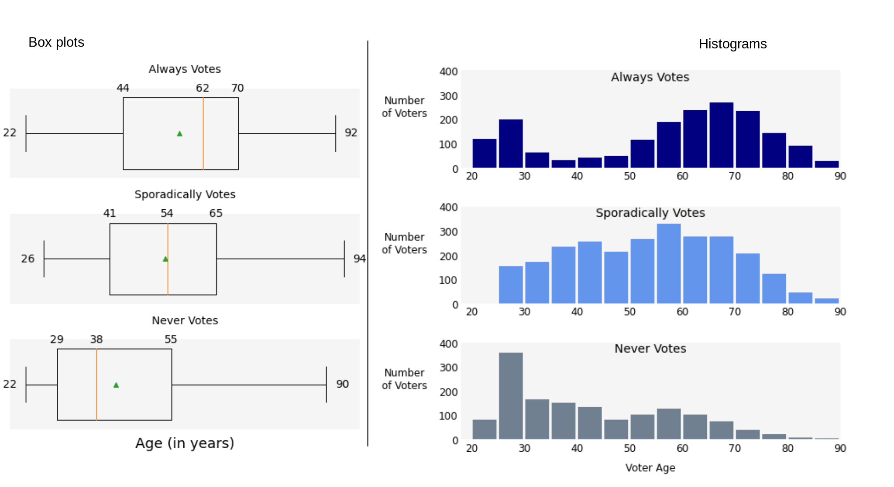

How can we summarize numeric variables?
It is common to report summary statistics for variables that are numeric, things like the mean and the standard deviation, or the median. One group of statistics is the five number summary: the minimum, the first quartile, the median, the third quartile, and the maximum value. This is one way to get a summary of how the data is distributed, but we might want to also look at the actual distribution, that is, what the actual values are and how many there are in various data ranges. In the figure below, we will look at the ages of voters in the data set, dividing them up in those who always vote, those who vote sporadically, and those who never vote.
A box plot shows the five number summary graphically, from the minimum to the quartiles to the maximum. We can see in general that the Never box plot is the leftmost, which means it has the smallest values, i.e. the youngest voters overall. The Always box plot is the rightmost, and hence has older voters than the other two.
A histogram groups the data into bins, ages 20-<30, 30-<40,40-<50 and so forth. The height of each bar indicates how many observations were in that group. We can see something slightly different now: the Always voting group has a lot of younger voters and also a lot of older voters - we couldn't really tell that from the box plots. Box plots are often hard for those with no statistical background to interpret, and they don't tell us anything about how many observations there are…unless we add that information specifically.